Is it possible to rid a country of crime?
On the face of it, it seems a daunting task. But it can be done. Thanks is no small part to innovations in technology.The very
technology that has helped create Ceasefire’s futuristic CCTV System.
With this system, you can keep a close eye on your home or workplace round the clock. Which means no matter what
happens or where you may be when it happens, you'll be the first to know.
A CCTV System comprises of a DVR (Digital Video Recorder) and one or more
cameras.
This cutting edge system acts like an intelligence unit that reports only to you
helping you monitor your home or workplace throughout the day. The cameras
pick up any action in their field of vision, display it on a monitor and feed it into
the DVR, which records and stores it for future references.
With a vast range of cameras, DVRs and accessories the CCTV surveillance
system can be customised to suit your needs.
Thanks to the Ceasefire CCTV System, you will never have to worry about
leaving domestic help alone at home again. Our Dome Cameras provide a 360
degree view, allowing you to keep an eye on every corner of your home. You
can find out if your expensive necklace was misplaced or stolen by accessing
footage recorded by the DVR. With this system, you can leave your home
confident that no one will be able to enter it without your knowledge.
With our CCTV cameras you will never have to worry about what goes on in your
workplace after office hours. If there are sensitive areas that need to be
monitored constantly; our system, equipped with motion detectors, will know
what to look out for. The cameras are cost effective and can be programmed to
begin recording the second the area under surveillance is trespassed or
disturbed in any way.
With our state-of-the-art surveillance system, factory owners can oversee
thousands of people at the same time and ensure that everything runs smoothly.
Our cameras are sophisticated enough to function perfectly even in less-thanideal
situations. Our Wide Dynamic Range Cameras, for instance, can
automatically adjust their sensors to suit the lighting of the area under
surveillance providing you with clear images even if there is a huge contrast in
lighting, allowing you to keep a vigilant eye on every corner of your factory.
CCTV systems are indispensable in retail outlets where one has to monitor a
vast area and hundreds of people at once.
The Ceasefire CCTV System makes it possible to identify shoplifters in large
crowds. Our DVRs allow you to view footage of several cameras at once, and
zoom in to the action if necessary.
The system’s motion detectors react to any disturbance in the area under
surveillance; and the Day and Night cameras provide clear images even at night.
Ceasefire’s state-of-the-art CCTV cameras have Charge-Coupled Device (CCD) sensors that offer crystal clear images and can
be mounted on walls or ceilings. The range of cameras is broadly divided into Bullet Cameras and Dome Cameras.
Integrated cameras and lenses that are sealed to prevent moisture from seeping
in are referred to as Bullet Cameras. Most of these cameras have a large
viewing angle. They are also compact, which makes them perfect for domestic
and commercial properties.
The camera’s dome-like shape is what gives it its name. The Dome Camera’s
unique design makes it difficult to judge where the camera is pointing without
close inspection. These cameras can be wall-mounted or ceiling-mounted.
The DNR DSP chipset has various powerful functions that give superior high resolution Day and Night images. It removes camera noise and the Sensor provides quality images at very low luminance levels. The most advanced technology is combined on a single DSP chipset, resulting in enhanced surveillance images.
DNR DSP CHIP
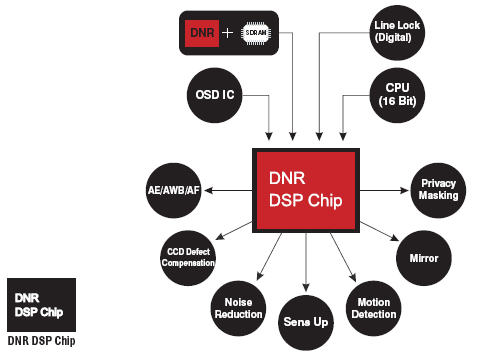WDR (Wide Dynamic Range)
WDR is a powerful and ultra-advanced technology
that captures cleaner and superior high resolution
pictures even where images appear dark because
of the presence of strong back light.
3D Filtering Method of Newly Advanced DNR Function
This function optimises the signal to noise ratio,
giving improved low light visibility and a powerful
Sens-Up function (up to 256 times magnification).
560 TV Lines
The combination of a Sony Super HAD CCD image
sensor and DNR DSP provides an excellent
resolution of 560 TV lines.
Spotlight BLC Function
This function is especially effective for reading
vehicle number plates at night. Users can select
and define the required observation area for the
target object and ignore strong spotlight areas.
Day and Night
Ceasefire's Day and Night Vision cameras have a CCD chip and built-in high infrared illuminators. These cameras automatically switch from colour to monochrome to enhance visibility in the dark.
Illumination
With incredibly minimum illumination (0.00004
Lux), these CCTVs capture amazing images even
in extremely low light conditions. Noise is also
significantly reduced by the highly advanced DNR
(Digital Noise Reduction) Technology.
DIS(Digital Image Stabilizer) Function
DIS function helps capture the highest resolution
pictures even when out of focus due to wind or
change in climate.
Anti-Vandal
These cameras are built with strong durable
material of a die-cast aluminum body and
polycarbonate dome to protect them from external
impacts. They are also shock, dust and explosion
Resistant.
ILBCT(IR LED Brightness Conservation Technology)
ILBCT has been developed as a preventive measure against the damage of IR LED due to an electric overload. The IR LED’s Brightness and video works normally without data loss, no matter what conditions it is installed under.
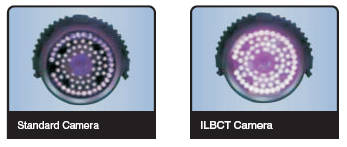
Powerful OSD Function for users convenience.
This makes both the setup and the controlling of the camera easier. It can be activated at the touch of the OSD button.
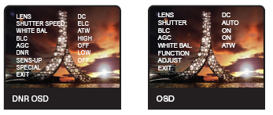Anti-Cobweb Function
This function emits a special high frequency signal that detracts spiders and other insects. This function is adjustable with the use of a remote control.
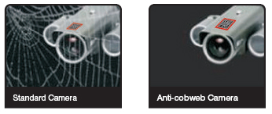Adjustment by remote control
Similar to the zoom in/out function of the zoom camera, the auto focus lens was developed to use the easy focus adjustment with the wireless remote control. Along with focus the OSD control can also be adjusted with one remote control.
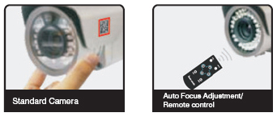Exterior Focus Adjustment
The camera’s focus can be controlled by using the exterior focus control ring without opening the camera’s casing. It is completely water resistant with an IP66 Certification.
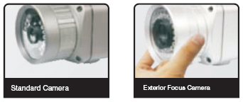Extra Video Tester Port
There is an extra video test port to adjust to the best performance during installation. The brightness level of these IR lights can be easily controlled by using the IR control volume button for the user's umpteen number of environments.
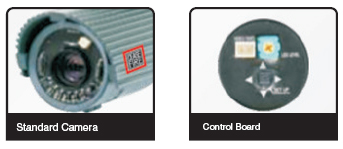PIR Sensor Camera
The built in PIR sensor activates the white LED when an intruder forcibly enters as a warning signal. The colour picture can be used to verify the face and features of the subject.
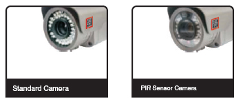180° Panoramic Camera without Blind Spot
This camera offers a 180° limitless observation angle. With this panoramic view, the blind spot is completely negligible.
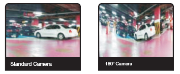Easy Installation Bracket
The multi axis bracket was initially designed similar to a gear system for easy installation of the camera. The camera can be easily installed in any place or position.
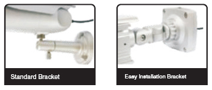DVRs are at the heart of the Ceasefire CCTV System. These recorders receive images from the CCTV camera, digitize them and store them electronically. The most common media for storage are hard disk drives like those used in personal computers.
Ceasefire's DVRs are available in three variants: 4 Channel, 8 Channel and 16 Channel. Ceasefire 4 Channel DVR is suitable for smaller shops / factories / office environment. It can hold up to 4 cameras and perform the basic functions of recording high resolution images.
The 8 and 16 Channel variants are part of the HD Range. These DVRs can store High-Definition images from up to 16 CCTVs. They are best suited for larger or more sensitive organizations such as dark warehouses, jewellery or white goods stores and high-security government areas.
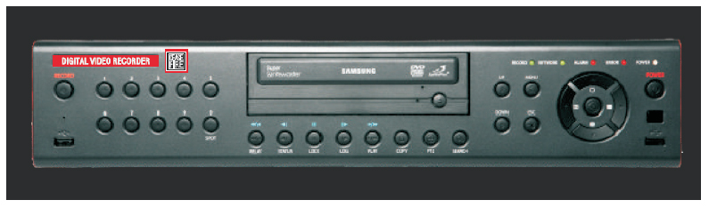H.264 DVR 4, 8 and 16 Channel and Eco-Range
*Applicable for Eco-Range
HEXAPLEXER
Ceasefire DVRs are on guard 24 x 7 providing the following facilities to users
(1)Live (2) Recording (3) Playback (4) Network (5) Backup (6) Setup.
H.264 (MH SERIES)
Ceasefire DVRs support the best in class video compression mode which is H.264. Thus the
images so recorded are of
highest standard.
AUTO E-MAILING
This is a revolutionary feature which is supported by Ceasefire DVRs thereby enhancing this reach and thus adding to their
versatility.
DVD R/W
Ceasefire DVRs (except the Eco-range) have the CD R/W thereby enabling the user to backup the recordings for future
reference.
INTERNET CONNECTIVITY
Ceasefire DVRs are fully internet compatible, thus enabling users to log in from anywhere in the world and monitor the
premise. Their state-of-the-art software is customized to enable total control from remote Locations.
MOBILE VIEWER
Ceasefire DVRs are very versatile, they provide you mobile viewing facility, thus, you stay connected to your premises while on
the move.
PRINTER CONNECTION
Ceasefire DVRs supports the output from the DVR to be backed up using a printable output thereby increasing its versatility.

AUDIO RECORDING
Ceasefire DVRs support bi-directional audio communication (two ways audio) which is an added feature in our range of DVRs